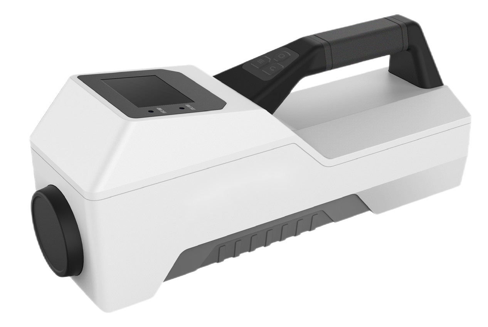

Solafact 120
Product Introduction

The SOLAFACT 120 Nuclide Identifier is used to search and identify radioactive material and quickly respond to radiological threats such as illegal shipments and radioactive diffusion devices, law enforcement detection, and hazardous material detection. Radionuclides can be quickly and reliably identified and classified, including re-shielded or hidden threats. The instrument uses a large-volume detector combined with a passive spectrum stabilization algorithm, and is specially designed for the special environment after a nuclear accident. The rugged construction and simple user modes are suitable for field applications in harsh environments and can also be used for mobile measurements. The instrument can identify dozens of radionuclides, including medical nuclides, industrial nuclides, natural radionuclides and special nuclear materials, and can expand the nuclide library according to user needs. The instrument is suitable for use by first responders, border and customs inspectors, law enforcement personnel, critical infrastructure nuclear facilities, and on-site inspections of various nuclear accidents.
Features
Good temperature adaptability, passive spectrum stabilization, no temperature drift.
Large crystal size and high sensitivity.
The overall structure is compact and easy to carry.
The nuclide library is powerful, and users can add nuclide types by themselves.
Fast response time, nuclide information within 30s.
Technical Specifications
Performance Parameters
2”*2” LaBr3 detector, optional GM counter tube and neutron detector
30keV~3MeV
Parameter Name
Detector
Energy range
0.01μSv/h~10mSv/h (Expandable type 1Sv/h)
Energy resolution
Not more than 4%(662keV)
Measuring range
Identify
Fast digital MCA2048 channel, throughput greater than 105cps
Response time
When the background environment is 0.5μSv/h, the nuclide information will be given within 30s.
Temperature range
-40° C~50° C minus
Degree of protection
IP54
Power supply
Lithium battery, built-in charger
Anti-electromagnetic interference, anti-shock, vibration and drop
Size
350mm×130mm×125mm
Weight
About 3.5kg
Nuclide library
235U, 239Pu, 22Na, 57Co, 60Co, 133Ba, 137Cs, 241Am, 99mTc, 131I, 18F, 152Eu, 155Eu, 192Ir, 166mHo, 125I, 238U, 232Th, 40K, 226Ra nuclides can be expanded
Algorithm Processing
Adopt passive spectrum stabilization and calibration technology to obtain energy spectrum continuously and stably without on-site calibration.
The background mutation suppression algorithm can continuously analyze the shape of the energy spectrum and eliminate the alarm caused by the background mutation.
Using natural radionuclide and medical radionuclide discrimination algorithm, up to four nuclides can be classified and identified at the same time.
Conforms to the standard JJF1687-2018 "Calibration Specifications for Handheld Radiation Monitors for Detecting and Identifying Radionuclides".
Application Area
It can be widely used in first responders, border and customs inspectors, law enforcement officers, critical infrastructure nuclear facilities, and site inspections of various nuclear accidents.